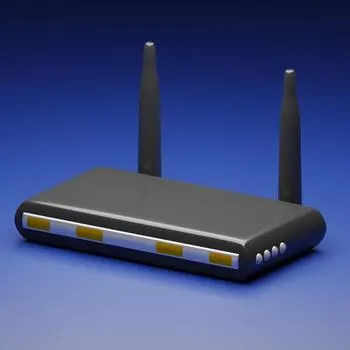

Answer all 10 questions. Includes MCQ, MSQ, and NAT.
1. Which component is generally considered the "brain" of the computer?
2. Identify the hardware port shown in the image below:
3. Which of the following are considered peripheral input devices? (Select all that apply)
4. How many bits make up a single standard byte? (Enter a number)
5. What happens to the data stored in RAM when the computer is powered off?
6. Which of the following are examples of Operating Systems? (Select all that apply)
7. What is the base number of the binary numeral system used by computers?
8. What is the primary function of the device shown below?

9. Which term describes a malicious attempt to trick users into revealing sensitive information like passwords?
10. Which of the following applications are considered Web Browsers? (Select all that apply)